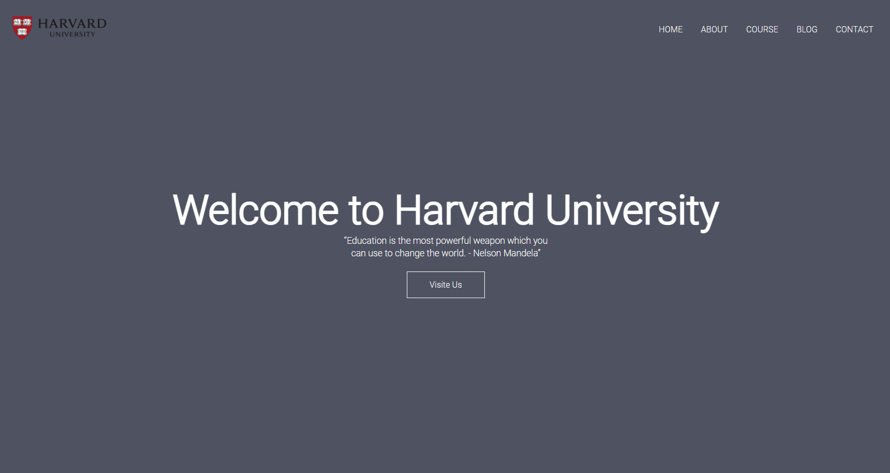

My Work

Project 1
An informative website created for Harvard University. This project showcases my skills in web development and design. Explore the site to learn more about Harvard and its programs!
Project 2
An informative website created for Horiseon. This project showcases my skills in web development and design. Explore the site!

Project 3
An informative website created. This project showcases my skills in web development and design. Explore the site!